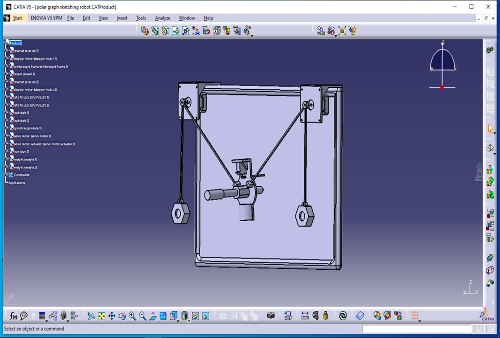

Project Overview
- Designed and developed a lightweight, portable XY-axis sketching robot capable of drawing on walls, glass, and paper with high precision.
- Enabled support for SVG (Scalable Vector Graphics) input, allowing users to upload and sketch complex images through open-source Makelangelo software.
- Utilized Arduino UNO microcontroller for motion control and pen actuation, ensuring ease of use and integration.
- Engineered custom mechanical parts, such as the pen holder and motor brackets, in CATIA and fabricated them using 3D printing technology.
- Implemented a GT2 pulley belt mechanism driven by two stepper motors for X and Y-axis movement and a servo motor for pen up/down control.
- Achieved smooth, coordinated motion for accurate sketching, with effective synchronization between the control system and mechanical structure.
- Focused on creating a cost-effective and versatile solution that can draw on various surfaces including A4 sheets, panels, and vertical surfaces.
- Developed with modularity and scalability in mind, making it suitable for art automation, educational use, and prototyping in robotics projects.
Project Gallery
XY Axis Sketching Robot in Action

Catia Model Design Assembly
Control System and Software Interface
Technologies & Skills
Arduino UNO
Stepper Motors
Servo Motor
C++ (Arduino IDE)
CATIA
SVG Processing
Mechanical Assembly
Electronics Wiring
Makelangelo Software
Dimensional Analysis
Prototyping
G-code Interpretation
Problem Solving
Documentation